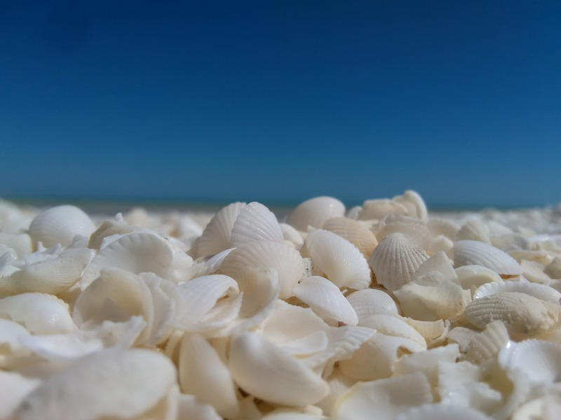
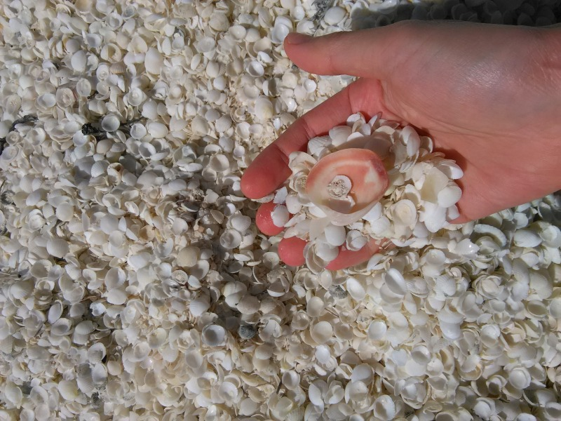
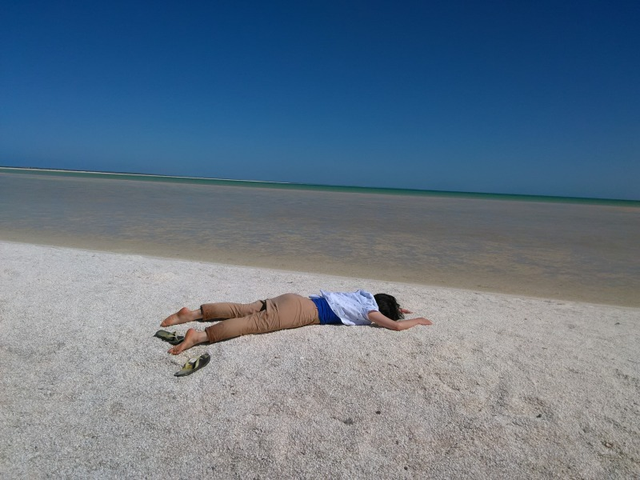
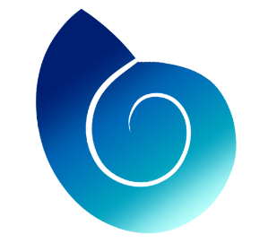
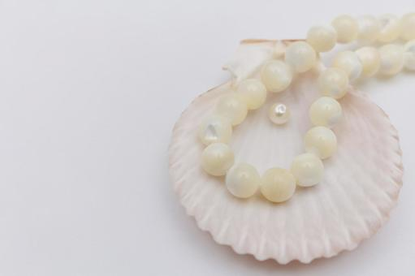
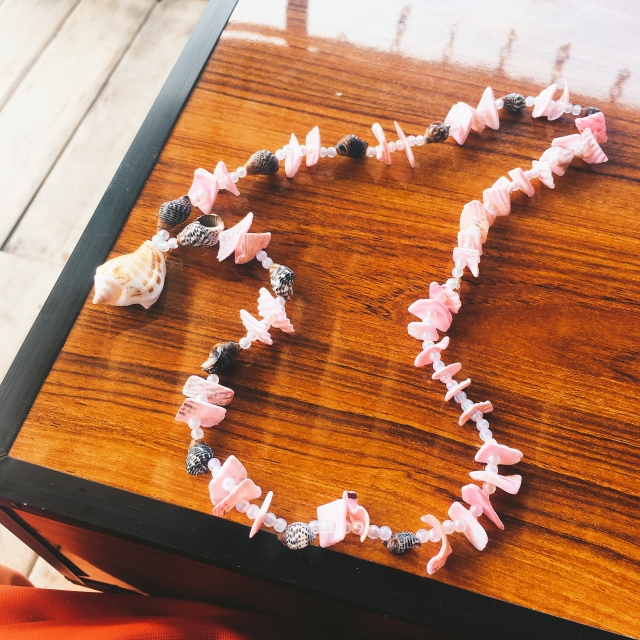
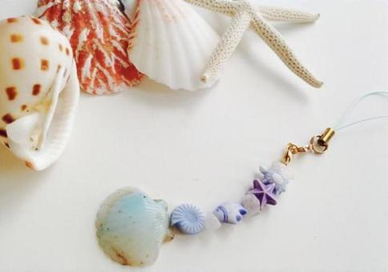

貝殻だけでできた不思議なビーチ？

フロリダ州サルベニ島と西オーストラリア州シャークベイは
世界三大シェルビーチと呼ばれる貝殻だけの海岸があります。
なぜ貝殻だけが集まって来てしまうのでしょうか？
海流の影響だと考えられていますが、
はっきりとした原因は解っていません。
そして、世界三大シェルビーチと呼ばれるのに
どんなに探しても、うえ2つのビーチしか見つかりませんでした・・・

世界のどこかに幻のシェルビーチがあるのかもしれません・・・

人間と比較してみましょう。

貝殻はアクセサリー？

真珠は色も形も様々な種類があります。
日本ではアコヤ貝から取れるアコヤ真珠や、
タヒチやオーストラリアで取れる南洋パールが人気です。
企画展では世界の様々な貝のアクセサリーも展示しています。
人類と貝のアクセサリー作り

世界最古のアクセサリーは動物の骨や牙など、
そして貝殻が使われてきました。
日本では螺鈿(らでん)という伝統工芸技法も生まれました。
このように世界中の人に貝のアクセサリーは好まれているのですね。
貝のストラップを作ろう！
古代の作り方でストラップを作ってみましょう。

お申込みはこちら
※5/3～5/5までのワークショップです